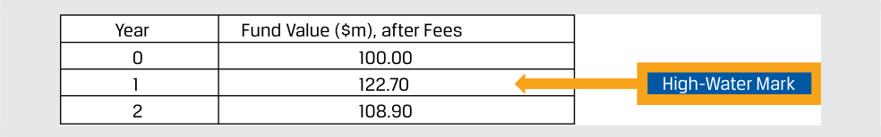

Learning Module 2 Alternative Investment Performance and Returns - Part 2: Alternative Investment Returns
Volume 8: Alternative Investments
Learning Module 2 Alternative Investment Performance and Returns
Part 2/3: Alternative Investment Returns (PDF Pages 52–65)
Tập 8: Đầu tư Thay thế (Volume 8: Alternative Investments)
Học phần 2: Hiệu quả Hoạt động và Tỷ suất Sinh lợi của Đầu tư Thay thế (Learning Module 2: Alternative Investment Performance and Returns)
Phần 2/3: Tỷ suất Sinh lợi của Đầu tư Thay thế (Alternative Investment Returns) (Trang PDF 52–65)
-
Level 2 assets: (a) Inputs other than quoted market prices are directly or indirectly observable for valuation on measurement date
-
Level 3 assets: (b) Unobservable inputs are used to evaluate fair value for the assets
-
Tài sản Cấp độ 2 (Level 2 assets): (a) Các yếu tố đầu vào ngoài giá thị trường niêm yết có thể quan sát được trực tiếp hoặc gián tiếp để định giá vào ngày đo lường
-
Tài sản Cấp độ 3 (Level 3 assets): (b) Các yếu tố đầu vào không thể quan sát được (unobservable inputs) được sử dụng để đánh giá giá trị hợp lý cho các tài sản
3
3
ALTERNATIVE INVESTMENT RETURNS
TỶ SUẤT SINH LỢI CỦA ĐẦU TƯ THAY THẾ (ALTERNATIVE INVESTMENT RETURNS)
calculate and interpret alternative investment returns both before and after fees
tính toán và diễn giải tỷ suất sinh lợi của các khoản đầu tư thay thế cả trước và sau khi trừ phí (before and after fees)
Hedge funds often use complex strategies to achieve outsized returns with low correlation with the broader market. These more complex strategies require more sophisticated portfolio management tools and a larger range of skills, making them more expensive to run. Rather than paying a very high flat management fee, investors demand that some of the compensation is aligned to the performance delivered by the strategy in the form of a performance fee.
Các quỹ phòng hộ (hedge funds) thường sử dụng các chiến lược phức tạp để đạt được tỷ suất sinh lợi vượt trội với mức tương quan thấp với thị trường chung. Những chiến lược phức tạp hơn này đòi hỏi các công cụ quản lý danh mục đầu tư tinh vi hơn và một phạm vi kỹ năng rộng hơn, khiến cho việc vận hành chúng trở nên tốn kém hơn. Thay vì trả một mức phí quản lý cố định (flat management fee) rất cao, các nhà đầu tư yêu cầu một phần thù lao phải được gắn kết với hiệu quả hoạt động do chiến lược đó mang lại dưới hình thức phí hiệu quả hoạt động (performance fee).
Apart from the performance fee, there are also other customized, complex compensation arrangements that seek to align manager and investor incentives. These structures are designed to reward investors for early involvement, larger investments, and/or longer lockup periods. Managers benefit from applying specialized knowledge and skills to achieve steadily rising returns in excess of a designated hurdle rate. These complex fee structures impact returns for different investors in the same fund, as well as returns before and after fees across various alternative investments.
Ngoài phí hiệu quả hoạt động, còn có các thỏa thuận thù lao phức tạp, được tùy chỉnh khác nhằm tìm cách gắn kết lợi ích động lực giữa nhà quản lý và nhà đầu tư. Những cấu trúc này được thiết kế để thưởng cho các nhà đầu tư tham gia sớm, đầu tư quy mô lớn hơn, và/hoặc chấp nhận thời gian khóa vốn (lockup periods) dài hơn. Các nhà quản lý hưởng lợi từ việc áp dụng kiến thức và kỹ năng chuyên môn sâu để đạt được tỷ suất sinh lợi tăng đều đặn vượt trên một mức tỷ suất sinh lợi tối thiểu (hurdle rate) được chỉ định. Những cấu trúc phí phức tạp này tác động đến tỷ suất sinh lợi của các nhà đầu tư khác nhau trong cùng một quỹ, cũng như tỷ suất sinh lợi trước và sau khi trừ phí trên khắp các khoản đầu tư thay thế khác nhau.
Another factor that can lock in or magnify losses for hedge funds is investor redemptions. Redemptions frequently occur when a hedge fund is performing poorly. Redemptions may require the hedge fund manager to liquidate some positions and potentially receive particularly disadvantageous prices when forced to do so by redemption pressures, while also incurring transaction costs.
Một yếu tố khác có thể khóa chặt hoặc làm khuếch đại các khoản lỗ đối với các quỹ phòng hộ là việc rút vốn của nhà đầu tư (investor redemptions). Việc rút vốn thường xuyên xảy ra khi một quỹ phòng hộ đang hoạt động kém hiệu quả. Việc rút vốn có thể buộc nhà quản lý quỹ phòng hộ phải thanh lý một số vị thế và có khả năng nhận được những mức giá đặc biệt bất lợi khi bị buộc phải làm như vậy dưới áp lực rút vốn, đồng thời còn phải gánh chịu chi phí giao dịch.
Funds sometimes charge a redemption fee to discourage redemption and to offset the transaction costs for remaining investors in the fund. A notice period is a period (typically 30–90 days) in advance that investors may be required to notify a fund of their intent to redeem some or all their investment. This notice period allows the fund manager an opportunity to liquidate a position in an orderly fashion without magnifying the losses. A lockup period is the minimum holding period before investors are allowed to make withdrawals or redeem shares from a fund. This provision is intended to allow the hedge fund manager the required time to implement and potentially realize a strategy’s expected results. If the fund receives a drawdown request shortly after a new investment, the lockup period forces the investors who made the request to stay in the fund for a period of time rather than be allowed to immediately withdraw. In addition, funds sometimes impose a gate , a provision that when implemented limits or restricts redemptions for a period of time, usually at the discretion of the fund manager. Investors should be aware of their liquidity needs before investing in a fund with restrictive provisions.
Các quỹ đôi khi tính một khoản phí rút vốn (redemption fee) để hạn chế việc rút vốn và để bù đắp chi phí giao dịch cho các nhà đầu tư còn ở lại trong quỹ. Thời gian thông báo trước (notice period) là một khoảng thời gian (thường là 30–90 ngày) báo trước mà các nhà đầu tư có thể được yêu cầu phải thông báo cho quỹ về ý định rút một phần hoặc toàn bộ khoản đầu tư của mình. Thời gian thông báo trước này tạo cơ hội cho nhà quản lý quỹ thanh lý một vị thế theo cách thức có trật tự mà không làm khuếch đại các khoản lỗ. Thời gian khóa vốn (lockup period) là thời gian nắm giữ tối thiểu trước khi các nhà đầu tư được phép rút tiền hoặc mua lại chứng chỉ quỹ từ một quỹ. Điều khoản này nhằm mục đích cho phép nhà quản lý quỹ phòng hộ có đủ thời gian cần thiết để triển khai và có khả năng hiện thực hóa các kết quả kỳ vọng của một chiến lược. Nếu quỹ nhận được yêu cầu rút vốn ngay sau một khoản đầu tư mới, thời gian khóa vốn buộc các nhà đầu tư đưa ra yêu cầu đó phải ở lại trong quỹ thêm một khoảng thời gian thay vì được phép rút vốn ngay lập tức. Ngoài ra, các quỹ đôi khi áp đặt một cổng hạn chế rút vốn (gate), một điều khoản mà khi được thực thi sẽ giới hạn hoặc hạn chế việc rút vốn trong một khoảng thời gian, thường theo quyền quyết định của nhà quản lý quỹ. Các nhà đầu tư cần nhận thức rõ về nhu cầu thanh khoản của mình trước khi đầu tư vào một quỹ có các điều khoản hạn chế.
A hedge fund’s ability to demand a long lockup period while raising a significant amount of investment capital depends a great deal on the reputation of either the firm or the hedge fund manager. Funds of hedge funds may offer more redemption flexibility than is afforded to direct investors in hedge funds because of special redemption arrangements with the underlying hedge fund managers, the maintenance of added cash reserves, access to temporary bridge-loan financing, or the simple avoidance of less liquid hedge fund strategies.
Khả năng của một quỹ phòng hộ trong việc yêu cầu một thời gian khóa vốn dài trong khi vẫn huy động được một lượng vốn đầu tư đáng kể phụ thuộc rất nhiều vào uy tín của công ty quản lý hoặc của nhà quản lý quỹ phòng hộ đó. Quỹ của các quỹ phòng hộ (funds of hedge funds) có thể mang lại sự linh hoạt rút vốn lớn hơn so với mức dành cho các nhà đầu tư trực tiếp vào quỹ phòng hộ nhờ các thỏa thuận rút vốn đặc biệt với các nhà quản lý quỹ phòng hộ cơ sở, việc duy trì thêm các quỹ dự trữ tiền mặt, khả năng tiếp cận nguồn tài trợ vay bắc cầu (bridge-loan financing) tạm thời, hoặc đơn giản là việc tránh xa các chiến lược quỹ phòng hộ kém thanh khoản hơn.
Ideally, redemption terms should be designed to match the expected liquidity of the assets being invested in, but even with careful planning, an initial drawdown can turn into something far more serious when it involves illiquid and obscure assets. These left-tailed loss events are not easily modeled for hedge funds.
Lý tưởng nhất là các điều khoản rút vốn nên được thiết kế sao cho khớp với tính thanh khoản kỳ vọng của các tài sản được đầu tư vào, nhưng ngay cả khi đã lập kế hoạch cẩn thận, một đợt sụt giảm/rút vốn ban đầu (initial drawdown) vẫn có thể biến thành một vấn đề nghiêm trọng hơn nhiều khi liên quan đến các tài sản kém thanh khoản và khó định giá. Những sự kiện thua lỗ ở phần đuôi bên trái của phân phối (left-tailed loss events) này không dễ dàng mô hình hóa đối với các quỹ phòng hộ.
Alternative Investment Returns
Tỷ suất Sinh lợi của Đầu tư Thay thế (Alternative Investment Returns)
Custom Fee Arrangements
Các Thỏa thuận Phí Tùy chỉnh (Custom Fee Arrangements)
Alternative investments often involve customized fee arrangements combining management and performance-based fees that vary based on the size, timing, and/or terms of investor participation in the investment over time. Examples include the following:
Các khoản đầu tư thay thế thường liên quan đến các thỏa thuận phí được tùy chỉnh kết hợp giữa phí quản lý và phí dựa trên hiệu quả hoạt động, biến thiên dựa trên quy mô, thời điểm, và/hoặc các điều khoản tham gia của nhà đầu tư vào khoản đầu tư theo thời gian. Các ví dụ bao gồm:
-
Fees based on liquidity terms and asset size: Limited partnerships may charge different rates depending on the liquidity terms that an investor is willing to accept (longer lockups resulting in lower fees), and managers may discount their fees for larger investors or for placement agents who introduced these investors. Different investors in the same fund may face different fee structures. For example, management fees for large LPs might range from 0.5% to 1.5%, with incentive fees reduced to 10%–15%, depending on the mandate. Such reductions can be meaningful in terms of net realized returns. However, smaller funds with strong performance (and capacity constraints) are able to maintain higher fees and may even decline business from larger investors rather than agree to a lower fee.
-
Founders shares: As a way to entice early participation in startup funds, managers sometimes offer incentives known as founders class shares . Founders shares entitle investors to a lower fee structure, such as a 1.5% management fee and a 10% performance fee rather than a more standard 2% management fee and a 20% performance fee, and may apply only to the first $100 million in assets invested, although cutoff thresholds vary. Another alternative is to reduce the fees for early founders share investors once the fund achieves a critical mass or performance targets.
-
“Either/or” fees: Major institutional investors, such as the Teacher Retirement System of Texas, have demanded that alternative investment funds accept an either/or fee agreement by choosing between fixed management and variable performance fees. Managers agree either to charge a lower, 1% management fee (to cover expenses during down years) or to accept a higher, 30% incentive fee above a mutually agreed-upon annual hurdle (to incentivize and reward managers during up years), whichever is greater. Major investors offering larger commitments may negotiate such novel fee structures designed to reward returns in excess of a benchmark, while smaller investors, such as high-net-worth individuals with smaller commitments, usually face more traditional fees.
-
Phí dựa trên các điều khoản thanh khoản và quy mô tài sản (Fees based on liquidity terms and asset size): Các công ty hợp danh hữu hạn có thể tính các mức tỷ lệ phí khác nhau tùy thuộc vào các điều khoản thanh khoản mà một nhà đầu tư sẵn sàng chấp nhận (thời gian khóa vốn dài hơn dẫn đến mức phí thấp hơn), và các nhà quản lý có thể chiết khấu phí cho các nhà đầu tư lớn hơn hoặc cho các đại lý thu xếp phát hành (placement agents) đã giới thiệu những nhà đầu tư này. Các nhà đầu tư khác nhau trong cùng một quỹ có thể đối mặt với các cấu trúc phí khác nhau. Ví dụ, phí quản lý cho các LP lớn có thể dao động từ 0,5% đến 1,5%, với phí khuyến khích giảm xuống còn 10%–15%, tùy thuộc vào hợp đồng ủy thác (mandate). Những mức giảm phí như vậy có thể rất có ý nghĩa xét về tỷ suất sinh lợi ròng thực nhận. Tuy nhiên, các quỹ nhỏ hơn có hiệu quả hoạt động mạnh mẽ (và bị giới hạn về quy mô tiếp nhận vốn – capacity constraints) có khả năng duy trì mức phí cao hơn và thậm chí có thể từ chối nhận vốn từ các nhà đầu tư lớn hơn thay vì đồng ý giảm phí.
-
Cổ phần sáng lập (Founders shares): Như một cách để thu hút sự tham gia sớm vào các quỹ mới thành lập, các nhà quản lý đôi khi đưa ra các ưu đãi được gọi là hạng cổ phần sáng lập (founders class shares). Cổ phần sáng lập cho phép các nhà đầu tư được hưởng một cấu trúc phí thấp hơn, chẳng hạn như phí quản lý 1,5% và phí hiệu quả hoạt động 10% thay vì mức tiêu chuẩn hơn là phí quản lý 2% và phí hiệu quả hoạt động 20%, và có thể chỉ áp dụng cho 100 triệu USD tài sản được đầu tư đầu tiên, mặc dù ngưỡng giới hạn (cutoff thresholds) có thể khác nhau. Một phương án thay thế khác là giảm phí cho các nhà đầu tư nắm giữ cổ phần sáng lập tham gia sớm một khi quỹ đạt đến một quy mô tới hạn (critical mass) hoặc đạt các mục tiêu hiệu quả hoạt động.
-
Phí “Một trong hai” (“Either/or” fees): Các nhà đầu tư tổ chức lớn, chẳng hạn như Hệ thống Hưu trí Giáo viên bang Texas (Teacher Retirement System of Texas), đã yêu cầu các quỹ đầu tư thay thế chấp nhận một thỏa thuận phí một trong hai (either/or fee) bằng cách lựa chọn giữa phí quản lý cố định và phí hiệu quả hoạt động biến đổi. Các nhà quản lý đồng ý hoặc tính mức phí quản lý thấp hơn là 1% (để trang trải chi phí trong những năm thị trường đi xuống) hoặc nhận mức phí khuyến khích cao hơn là 30% vượt trên một mức tỷ suất sinh lợi tối thiểu hàng năm đã được hai bên thỏa thuận (để khuyến khích và thưởng cho các nhà quản lý trong những năm thị trường đi lên), tùy theo mức nào lớn hơn. Các nhà đầu tư lớn đưa ra các cam kết vốn lớn hơn có thể đàm phán những cấu trúc phí mới mẻ như vậy được thiết kế để thưởng cho tỷ suất sinh lợi vượt trên chỉ số tham chiếu, trong khi các nhà đầu tư nhỏ hơn, chẳng hạn như các cá nhân có giá trị tài sản ròng cao (high-net-worth individuals) với mức cam kết nhỏ hơn, thường phải chịu các mức phí truyền thống hơn.
Alternative Investment Return Calculations
Tính toán Tỷ suất Sinh lợi của Đầu tư Thay thế (Alternative Investment Return Calculations)
Return calculations vary among alternative investments based on the form of the investments, as described in an earlier lesson. While more liquid alternative investments, such as REITs, commodity index exchange-traded funds, or other frequently traded investments, have a simple management fee structure similar to common assets, those with longer life cycles, illiquidity, and less transparency, such as private equity, hedge funds, and real estate, often use performance fees with modifications to create incentives for managers to act in the best interest of investors.
Các phép tính tỷ suất sinh lợi có sự khác nhau giữa các khoản đầu tư thay thế dựa trên hình thức của các khoản đầu tư, như đã được mô tả trong một bài học trước. Trong khi các khoản đầu tư thay thế có tính thanh khoản cao hơn, chẳng hạn như REITs, các quỹ ETF chỉ số hàng hóa thương phẩm, hoặc các khoản đầu tư được giao dịch thường xuyên khác, có cấu trúc phí quản lý đơn giản tương tự như các tài sản phổ biến, thì những khoản đầu tư có vòng đời dài hơn, kém thanh khoản và ít minh bạch hơn, chẳng hạn như vốn cổ phần tư nhân, quỹ phòng hộ và bất động sản, thường sử dụng phí hiệu quả hoạt động kèm theo các điều khoản sửa đổi nhằm tạo động lực cho các nhà quản lý hành động vì lợi ích tốt nhất của các nhà đầu tư.
The impact of different fee arrangements and their effect on the resulting returns to investors is best illustrated using a series of examples. If we assume fixed GP management fees as a percentage of assets under management (AUM) of rm , beginning-of-period assets of P 0, end-of-period assets of P 1, and a GP performance fee ( p ) that is a percentage of total return, the GP’s return in currency terms ( RGP ) is as follows:
Tác động của các thỏa thuận phí khác nhau và ảnh hưởng của chúng đến tỷ suất sinh lợi mang lại cho các nhà đầu tư được minh họa rõ nhất bằng cách sử dụng một loạt các ví dụ. Nếu chúng ta giả định phí quản lý cố định của GP tính bằng tỷ lệ phần trăm của tài sản đang quản lý (AUM) là $r_m$, tài sản đầu kỳ là $P_0$, tài sản cuối kỳ là $P_1$, và phí hiệu quả hoạt động của GP ($p$) là một tỷ lệ phần trăm của tổng mức sinh lợi, thì thu nhập của GP tính theo đơn vị tiền tệ ($R_{GP}$) là như sau:
RGP = ( P 1 × rm ) + max[0, ( P 1 – P 0) × p ]. ~~(4)~~
And we may solve for an investor’s periodic rate of return, ri , as follows:
Và chúng ta có thể giải tìm tỷ suất sinh lợi định kỳ của nhà đầu tư, $r_i$, như sau:
ri = ( P 1 – P 0 – RGP )/ P 0. ~~(5)~~
EXAMPLE 3
VÍ DỤ 3 (EXAMPLE 3)
Kettleside Timberland LP
Kettleside Timberland LP
Kettleside is a timberland investment management organization with $100 million of initial investment capital. It charges a 1% management fee based on year-end AUM ( rm ) and a 20% performance fee ( p ). In its first year, Kettleside generates a 30% return. Assume management fees are calculated using an endof-period valuation.
Kettleside là một tổ chức quản lý đầu tư đất lâm nghiệp với 100 triệu USD vốn đầu tư ban đầu. Tổ chức này tính phí quản lý 1% dựa trên AUM cuối năm ($r_m$) và phí hiệu quả hoạt động 20% ($p$). Trong năm đầu tiên của mình, Kettleside tạo ra mức tỷ suất sinh lợi 30%. Giả sử phí quản lý được tính bằng cách sử dụng mức định giá cuối kỳ.
- What are Kettleside’s fees if the performance and management fees are calculated independently? What is an investor’s effective return given this fee structure?
- Tổng phí của Kettleside là bao nhiêu nếu phí hiệu quả hoạt động và phí quản lý được tính độc lập với nhau? Tỷ suất sinh lợi thực tế của nhà đầu tư là bao nhiêu với cấu trúc phí này?
Solution:
Lời giải (Solution):
Using Equation 4 with P 0 equal to $100 million, _P_ 1 of $130 million, rm = 1%, and p = 20%,
Sử dụng Phương trình 4 với $P_0$ bằng 100 triệu USD, $P_1$ bằng 130 triệu USD, $r_m = 1\%$, và $p = 20\%$:
RGP = $130 million × 1% + max[0, ($130 million – $100 million) × 20%] = $7.3 million.
ri = ($130 million – $100 million – $7.3 million)/$100 million = 22.7%.
- What are Kettleside’s fees if the performance fee is calculated from the return net of the management fee? What is an investor’s net return given this fee structure?
- Tổng phí của Kettleside là bao nhiêu nếu phí hiệu quả hoạt động được tính từ mức sinh lợi sau khi đã trừ (net of) phí quản lý? Tỷ suất sinh lợi ròng của nhà đầu tư là bao nhiêu với cấu trúc phí này?
Solution:
Lời giải (Solution):
In order to solve for GP return where performance fee is calculated net of management fees, we must modify Equation 4 as follows:
Để giải tìm thu nhập của GP trong trường hợp phí hiệu quả hoạt động được tính sau khi đã trừ phí quản lý, chúng ta phải sửa đổi Phương trình 4 như sau:
RGP ( Net ) = ( P 1 × rm ) + max{0, [ P 1(1 – rm ) – P 0] × p }. (6) Using Equation 6 with P 0 of $100 million, _P_ 1 of $130 million, rm = 1%, and p = 20%, RGP ( Net ) = $130 million × 1% + max{0, [$130 million(0.99) – $100 million] × 20%} = $7.04 million. ri = ($130 million – $100 million – $7.04 million)/$100 million = 22.96%.
The previous example demonstrates how fee calculations affect investor returns, with a higher return when fees are calculated on a net basis. Alternative investment databases and indexes usually report fund performance net of aggregated fees. If fee structures vary, the actual net-of-fee returns earned by various investors may vary from the quoted return.
Sử dụng Phương trình 6 với $P_0$ là 100 triệu USD, $P_1$ là 130 triệu USD, $r_m = 1\%$, và $p = 20\%$:
Ví dụ trước minh họa cách thức các phép tính phí ảnh hưởng đến tỷ suất sinh lợi của nhà đầu tư, với mức tỷ suất sinh lợi cao hơn khi phí hiệu quả được tính trên cơ sở ròng (sau khi trừ phí quản lý). Các cơ sở dữ liệu và chỉ số đầu tư thay thế thường báo cáo hiệu quả hoạt động của quỹ sau khi đã trừ tổng các khoản phí (net of aggregated fees). Nếu cấu trúc phí khác nhau, tỷ suất sinh lợi sau phí thực tế mà các nhà đầu tư khác nhau kiếm được có thể khác với mức tỷ suất sinh lợi được niêm yết công bố.
One fee structure variation involves the modification of performance fees using hurdle rates and high-water marks. In the next example, we consider the effect of both on investor returns using the same details from the prior example.
Một biến thể cấu trúc phí liên quan đến việc sửa đổi phí hiệu quả hoạt động bằng cách sử dụng mức tỷ suất sinh lợi tối thiểu (hurdle rates) và mức đỉnh giá trị (high-water marks). Trong ví dụ tiếp theo, chúng ta xem xét tác động của cả hai yếu tố này đến tỷ suất sinh lợi của nhà đầu tư bằng cách sử dụng cùng các thông tin chi tiết từ ví dụ trước.
EXAMPLE 4
VÍ DỤ 4 (EXAMPLE 4)
Kettleside Timberland LP Performance Fee Modifications
Các Điều khoản Sửa đổi Phí Hiệu quả Hoạt động của Kettleside Timberland LP (Kettleside Timberland LP Performance Fee Modifications)
As in the prior case, Kettleside Timberland LP has initial capital of $100 million, charging a 1% management fee based on year-end AUM ( rm ) and a 20% performance fee ( p ).
Giống như trong trường hợp trước, Kettleside Timberland LP có số vốn ban đầu là 100 triệu USD, tính phí quản lý 1% dựa trên AUM cuối năm ($r_m$) và phí hiệu quả hoạt động 20% ($p$).
- If Kettleside’s fee agreement specifies a 6% hurdle rate with performance fees based on returns in excess of the hurdle rate, what are Kettleside’s fees assuming the performance fee is calculated net of the management fee? What is an investor’s net return given this fee structure?
- Nếu thỏa thuận phí của Kettleside quy định mức tỷ suất sinh lợi tối thiểu (hurdle rate) là 6% với phí hiệu quả hoạt động dựa trên phần sinh lợi vượt quá (in excess of) mức tỷ suất sinh lợi tối thiểu, thì tổng phí của Kettleside là bao nhiêu nếu giả định phí hiệu quả hoạt động được tính sau khi đã trừ (net of) phí quản lý? Tỷ suất sinh lợi ròng của nhà đầu tư là bao nhiêu với cấu trúc phí này?
Solution:
Lời giải (Solution):
To solve for Kettleside’s fees with a hard hurdle rate calculated net of management fees, we make a further adjustment to Equation 4 by incorporating the hurdle rate, rh , as follows:
Để giải tìm tổng phí của Kettleside với mức tỷ suất sinh lợi tối thiểu cứng (hard hurdle rate) được tính sau khi đã trừ phí quản lý, chúng ta thực hiện thêm một điều chỉnh đối với Phương trình 4 bằng cách kết hợp thêm mức tỷ suất sinh lợi tối thiểu, $r_h$, như sau:
RGP ( Net with Hurdle ) = ( P 1 × rm ) + max{0, [ P 1(1 – rm ) – P 0 × (1 + rh )] × p } (7)
RGP ( Net with Hurdle ) = $130 million × 1% + max{0, [$130 million(0.99) – $100 million(1.06)] × 20%}
= $5.84 million.
ri = ($130 million – $100 million – $5.84 million)/$100 million
= 24.16%.
- In the second year, Kettleside fund value declines to $110 million. The fee structure is as specified in Question 1 of Example 3 but also includes the use of a high-water mark ( PHWM ) computed net of fees. What are Kettleside’s
- Trong năm thứ hai, giá trị quỹ Kettleside sụt giảm xuống còn 110 triệu USD. Cấu trúc phí giống như đã quy định ở Câu hỏi 1 của Ví dụ 3 nhưng cũng bao gồm thêm việc sử dụng mức đỉnh giá trị ($P_{HWM}$) được tính sau khi trừ phí. Tổng phí của Kettleside
fees in the second year? What is an investor’s net return for the second year given this fee structure?
trong năm thứ hai là bao nhiêu? Tỷ suất sinh lợi ròng của nhà đầu tư cho năm thứ hai là bao nhiêu với cấu trúc phí này?
Solution:
Lời giải (Solution):
We must again alter Equation 4 to include the high-water mark ( PHWM ) provision, as follows:
Chúng ta lại phải sửa đổi Phương trình 4 để đưa vào điều khoản mức đỉnh giá trị ($P_{HWM}$), như sau:
RGP ( High-Water Mark ) = ( P 2 × rm ) + max[0,P2((1− rm ) − PHWM ) × p ] (8)
where PHWM is defined as the maximum fund value at the end of any previous period net of fees. We may solve for investor return ri in Period 2 as follows:
trong đó $P_{HWM}$ được định nghĩa là giá trị quỹ tối đa vào cuối bất kỳ kỳ nào trước đó sau khi đã trừ phí (net of fees). Chúng ta có thể giải tìm tỷ suất sinh lợi của nhà đầu tư $r_i$ trong Kỳ 2 như sau:
ri = ( P 2 − P 1 − RGP )/ P 1. (9)
RGP ( High-Water Mark ) = $110 million × 1% + max[0, ($110 × 0.99 − $124.16) × 20%] = $1.1 million.
ri = ($110 million − $124.16 million − $1.1 million)/$124.16 million = −12.291%.
The beginning capital position in the second year for the investors is $130 million − $5.84 million = $124.16 million. The ending capital position at the end of the second year is $110 million − $1.1 million = $108.9 million.
Vị thế vốn đầu kỳ trong năm thứ hai của các nhà đầu tư là $\$130\text{ triệu} - \$5,84\text{ triệu} = \$124,16\text{ triệu}$. Vị thế vốn cuối kỳ vào cuối năm thứ hai là $\$110\text{ triệu} - \$1,1\text{ triệu} = \$108,9\text{ triệu}$.
- In the third year, Kettleside’s fund value increases to $128 million. The fee structure is as specified in Questions 1 and 2 of Example 4. What are Kettleside’s fees in the third year? What is an investor’s net return for the third year given this fee structure?
- Solution:
- Trong năm thứ ba, giá trị quỹ của Kettleside tăng lên 128 triệu USD. Cấu trúc phí giống như đã quy định trong Câu hỏi 1 và 2 của Ví dụ 4. Tổng phí của Kettleside trong năm thứ ba là bao nhiêu? Tỷ suất sinh lợi ròng của nhà đầu tư cho năm thứ ba là bao nhiêu với cấu trúc phí này?
- Lời giải (Solution):
We amend Equation 8 and Equation 9 to reflect returns for the third period and calculate as follows:
Chúng ta sửa đổi Phương trình 8 và Phương trình 9 để phản ánh tỷ suất sinh lợi cho kỳ thứ ba và tính toán như sau:
RGP ( High-Water Mark ) = ( P 2 × rm ) + max[0,P2((1− rm ) − PHWM ) × p ]
ri = ( P 3 – P 2 – RGP )/ P 2.
Note that the high-water mark, PHWM , is the highest value of the fund after fees in all previous years. In Kettleside’s case, it was $122.7 million, the ending value in the first year, P 1.
Lưu ý rằng mức đỉnh giá trị, $P_{HWM}$, là giá trị cao nhất của quỹ sau khi trừ phí trong tất cả các năm trước đó. Trong trường hợp của Kettleside (theo cấu trúc Câu 1 Ví dụ 3), giá trị đó là 122,7 triệu USD (hoặc 124,16 triệu USD theo Câu 1 Ví dụ 4), là giá trị cuối kỳ trong năm đầu tiên, $P_1$.
Kettleside Timberland LP Performance Fee Modifications
Các Điều khoản Sửa đổi Phí Hiệu quả Hoạt động của Kettleside Timberland LP (Kettleside Timberland LP Performance Fee Modifications)

Chú thích hình ảnh: Bảng giá trị quỹ sau phí (*Fund Value ($m), after Fees*) qua các năm: Năm 0 = $100,00$; Năm 1 = $122,70$ (Mức đỉnh giá trị – *High-Water Mark*); Năm 2 = $108,90$.
RGP ( High-Water Mark ) = $128 million × 1% + max[0, ($128 × 0.99 − $124.16) × 20%]
- = $1.792 million.
ri = ($128 million − $108.9 million − $1.792 million)/$108.9 million
= 15.89%.
The beginning capital position in the third year for the investors is $110 million − $1.1 million = $108.9 million. The ending capital position for the third year is $128 million − $1.792 million = $126.208 million, which represents a new high-water mark to be applied the following year for this investor.
Performance fee modifications may have similar or different effects on the periodic investor returns depending on the timing of an investment. For example, if two Kettleside investors were to purchase the fund at different times and had otherwise similar fee structures, they would both realize a fee reduction in the case of a hard hurdle equal to Pt × rh × p , or the product of the end-of-period fund value for year t , the hurdle rate, and the performance fee. However, in the case of a high-water mark, the time-dependent nature of this fee modification gives different results for an investor who enters the fund at a later date, as in the following example.
Vị thế vốn đầu kỳ trong năm thứ ba của các nhà đầu tư là $\$110\text{ triệu} - \$1,1\text{ triệu} = \$108,9\text{ triệu}$. Vị thế vốn cuối kỳ cho năm thứ ba là $\$128\text{ triệu} - \$1,792\text{ triệu} = \$126,208\text{ triệu}$, đại diện cho một mức đỉnh giá trị (high-water mark) mới sẽ được áp dụng vào năm tiếp theo cho nhà đầu tư này.
EXAMPLE 5
Các điều khoản sửa đổi phí hiệu quả hoạt động có thể có tác động tương tự hoặc khác biệt lên tỷ suất sinh lợi định kỳ của nhà đầu tư tùy thuộc vào thời điểm thực hiện khoản đầu tư. Ví dụ, nếu hai nhà đầu tư của Kettleside mua chứng chỉ quỹ vào các thời điểm khác nhau và có các cấu trúc phí tương tự nhau về mọi mặt khác, cả hai đều sẽ nhận được mức giảm phí trong trường hợp áp dụng mức tỷ suất sinh lợi tối thiểu cứng (hard hurdle) bằng $P_t \times r_h \times p$, tức là tích số của giá trị quỹ cuối kỳ của năm $t$, mức tỷ suất sinh lợi tối thiểu, và tỷ lệ phí hiệu quả hoạt động. Tuy nhiên, trong trường hợp áp dụng mức đỉnh giá trị (high-water mark), bản chất phụ thuộc vào thời gian của điều khoản sửa đổi phí này mang lại các kết quả khác nhau cho một nhà đầu tư tham gia vào quỹ ở một thời điểm muộn hơn, như trong ví dụ dưới đây.
Kettleside Timberland LP High-Water Mark for New Investor
VÍ DỤ 5 (EXAMPLE 5)
At the end of Year 2, Kettleside Timberland LP has capital of $108.9 million. Consider the Year 3 returns of a new investor assuming the same fund performance and fee structure—namely, a 1% management fee based on year-end AUM ( rm ), a 20% performance fee ( p ), and a high-water mark provision.
Mức Đỉnh Giá trị của Kettleside Timberland LP đối với Nhà đầu tư Mới (Kettleside Timberland LP High-Water Mark for New Investor)
RGP ( High-Water Mark ) = ( P 3 × rm ) + max[0, ( P 3 – PHWM ) × p ].
ri = ( P 3 – P 2 – RGP )/ P 2. RGP ( High-Water Mark ) = $128 million × 1% + max[0, ($128 million – $108.9 million) × 20%] = $5.1 million.
Vào cuối Năm 2, Kettleside Timberland LP có số vốn là 108,9 triệu USD. Hãy xét tỷ suất sinh lợi Năm 3 của một nhà đầu tư mới giả định cùng mức hiệu quả hoạt động và cấu trúc phí của quỹ—cụ thể là phí quản lý 1% dựa trên AUM cuối năm ($r_m$), phí hiệu quả hoạt động 20% ($p$), và điều khoản mức đỉnh giá trị (high-water mark).
ri = ($128 million – $108.9 million – $5.1 million)/$108.9 million = 12.856%.
Lưu ý rằng nhà đầu tư mới trong Ví dụ 5 không nhận được bất kỳ sự giảm phí nào nhờ mức đỉnh giá trị như trong trường hợp trước và do đó phải chịu mức tỷ suất sinh lợi định kỳ thấp hơn so với nhà đầu tư đã tham gia kể từ khi thành lập quỹ.
Note that the new investor in Example 5 realizes no high-water mark reduction in fees as in the prior case and therefore faces a lower periodic return than the investor participating since the fund’s inception.
Trong các trường hợp khác, thời điểm phát sinh tỷ suất sinh lợi có thể có tác động đáng kể đến phí của nhà quản lý và tỷ suất sinh lợi của nhà đầu tư, như được thể hiện trong ví dụ sau đây về điều khoản thu hồi phí (clawback provision).
In other instances, the timing of returns can have a meaningful impact on manager fees and investor returns, as shown in the following example of a clawback provision.
VÍ DỤ 6 (EXAMPLE 6)
EXAMPLE 6
Tenderledge Opportunity Fund LP—Clawback Provision
Quỹ Cơ hội Tenderledge LP — Điều khoản Thu hồi Phí (Tenderledge Opportunity Fund LP—Clawback Provision)
Tenderledge Opportunity Fund makes $20 million in new investments, evenly divided with $10 million into Arguston Inc. (a leveraged buyout) and $10 million to Heartfield Digital (an early-stage venture) One year later, Arguston is sold to a strategic buyer for $22 million after costs. Two years later, Heartfield Digital fails and Tenderledge is unable to recoup any of its original investment.
Quỹ Cơ hội Tenderledge (Tenderledge Opportunity Fund) thực hiện 20 triệu USD đầu tư mới, chia đều với 10 triệu USD vào Arguston Inc. (một thương vụ mua lại bằng đòn bẩy – LBO) và 10 triệu USD vào Heartfield Digital (một doanh nghiệp mạo hiểm giai đoạn đầu). Một năm sau, Arguston được bán cho một người mua chiến lược với giá 22 triệu USD sau khi trừ chi phí. Hai năm sau, Heartfield Digital thất bại và Tenderledge không thể thu hồi được bất kỳ đồng vốn đầu tư ban đầu nào của mình.
- If Tenderledge’s fee agreement as general partner (GP) specifies a 20% performance fee of aggregate profits ( p ) with a clawback provision, which performance fees will Tenderledge accrue and what will it ultimately receive? Solution:
- Nếu thỏa thuận phí của Tenderledge với tư cách là thành viên hợp danh (GP) quy định mức phí hiệu quả hoạt động là 20% trên tổng lợi nhuận gộp chung ($p$) kèm theo một điều khoản thu hồi phí (clawback provision), thì Tenderledge sẽ ghi nhận dự thu (accrue) những khoản phí hiệu quả hoạt động nào và cuối cùng công ty sẽ nhận được bao nhiêu? Lời giải (Solution):
Gain in the Arguston investment: $22 million – $10 million = $12 million. Loss in the Heartfield Digital investment: $0 – $10 million = –$10 million.
Lãi từ khoản đầu tư Arguston: $\$22\text{ triệu} - \$10\text{ triệu} = \$12\text{ triệu}$. Lỗ từ khoản đầu tư Heartfield Digital: $\$0 - \$10\text{ triệu} = -\$10\text{ triệu}$.
Aggregate gain of Tenderledge after two years = $12 million – $10 million = $2 million.
Tổng lãi của Tenderledge sau hai năm $= \$12\text{ triệu} - \$10\text{ triệu} = \$2\text{ triệu}$.
Tenderledge would initially accrue 20% of the $12 million aggregate profit from the sale of Arguston at the end of the first year, or $12 million × 20% = $2.4 million. This amount is typically held in escrow for the benefit of the GP but not paid.
Ban đầu, Tenderledge sẽ ghi nhận dự thu 20% trên khoản tổng lợi nhuận 12 triệu USD từ việc bán Arguston vào cuối năm đầu tiên, tức là $\$12\text{ triệu} \times 20\% = \$2,4\text{ triệu}$. Số tiền này thường được giữ trong tài khoản phong tỏa (held in escrow) vì lợi ích của GP nhưng chưa được chi trả.
The failure of Heartfield Digital in Year 2 reduces the original $12 million gain by $10 million, so the aggregate fund gain at the end of Year 2 is only $2 million. This net profit results in a performance fee of $400,000 (= $2 million × 20%). Tenderledge would then have to return $2 million of the previously accrued performance fees to LP investor capital accounts due to the clawback provision.
Sự thất bại của Heartfield Digital vào Năm 2 làm giảm khoản lãi 12 triệu USD ban đầu đi 10 triệu USD, vì vậy tổng lãi của quỹ vào cuối Năm 2 chỉ còn 2 triệu USD. Khoản lợi nhuận ròng này dẫn đến mức phí hiệu quả hoạt động là $400.000\text{ USD}$ ($= \$2\text{ triệu} \times 20\%$). Khi đó, Tenderledge sẽ phải hoàn trả lại 2 triệu USD trong số phí hiệu quả hoạt động đã dự thu trước đó về các tài khoản vốn của nhà đầu tư LP do có điều khoản thu hồi phí (clawback provision).
KNOWLEDGE CHECK FEE AND RETURN CALCULATIONS
KIỂM TRA KIẾN THỨC: TÍNH TOÁN PHÍ VÀ TỶ SUẤT SINH LỢI (KNOWLEDGE CHECK: FEE AND RETURN CALCULATIONS)
AWJ Capital is a hedge fund with $100 million of initial investment capital. It charges a 2% management fee based on year-end AUM and a 20% incentive fee. In its first year, AWJ Capital has a 30% return. Assume management fees are calculated using end-of-period valuation.
AWJ Capital là một quỹ phòng hộ với 100 triệu USD vốn đầu tư ban đầu. Quỹ tính phí quản lý 2% dựa trên AUM cuối năm và phí khuyến khích (incentive fee) 20%. Trong năm đầu tiên của mình, AWJ Capital đạt mức tỷ suất sinh lợi 30%. Giả sử phí quản lý được tính bằng cách sử dụng mức định giá cuối kỳ.
- What are the fees earned by AWJ if the incentive and management fees are calculated independently? What is an investor’s effective return given this fee structure?
- Tổng số phí mà AWJ kiếm được là bao nhiêu nếu phí khuyến khích và phí quản lý được tính độc lập với nhau? Tỷ suất sinh lợi thực tế của nhà đầu tư là bao nhiêu với cấu trúc phí này?
Solution:
Lời giải (Solution):
AWJ fees:
Phí của AWJ:
$130 million × 2% = $2.6 million management fee.
$\$130\text{ triệu} \times 2\% = \$2,6\text{ triệu}$ phí quản lý.
($130 million − $100 million) × 20% = $6 million incentive fee.
$(\$130\text{ triệu} - \$100\text{ triệu}) \times 20\% = \$6\text{ triệu}$ phí khuyến khích.
Total fees to AWJ Capital = $8.6 million.
Tổng phí trả cho AWJ Capital $= \$8,6\text{ triệu}$.
- What are the fees earned by AWJ assuming that the incentive fee is calculated from the return net of the management fee? What is an investor’s net return given this fee structure?
- Solution:
Tỷ suất sinh lợi của nhà đầu tư $= (\$130\text{ triệu} - \$100\text{ triệu} - \$8,6\text{ triệu}) / \$100\text{ triệu} = 21,4\%$.
$130 million × 2% = $2.6 million management fee.
- Tổng số phí mà AWJ kiếm được là bao nhiêu nếu giả định rằng phí khuyến khích được tính từ mức sinh lợi sau khi đã trừ phí quản lý (net of the management fee)? Tỷ suất sinh lợi ròng của nhà đầu tư là bao nhiêu với cấu trúc phí này?
- Lời giải (Solution):
($130 million − $100 million − $2.6 million) × 20%
$\$130\text{ triệu} \times 2\% = \$2,6\text{ triệu}$ phí quản lý.
= $5.48 million incentive fee.
$(\$130\text{ triệu} - \$100\text{ triệu} - \$2,6\text{ triệu}) \times 20\% = \$5,48\text{ triệu}$ phí khuyến khích.
Total fees to AWJ Capital = $8.08 million.
Tổng phí trả cho AWJ Capital $= \$8,08\text{ triệu}$.
Investor return = ($130 million − $100 million − $8.08 million)/$100 million
Tỷ suất sinh lợi của nhà đầu tư $= (\$130\text{ triệu} - \$100\text{ triệu} - \$8,08\text{ triệu})/\$100\text{ triệu}$
| = 21.92%. |
|---|
| 3. If the fee structure specifies a hurdle rate of 5% and the incentive fee is based on returns in excess of the hurdle rate, what are the fees earned by AWJ as- suming the performance fee is calculated net of the management fee? What is an investor’s net return given this fee structure? Solution: |
| $130 million × 2% = $2.6 million management fee. |
| ($130 million − $100 million − $5 million − $2.6 million) × 20% = $4.48 million incentive fee. |
| Total fees to AWJ Capital = $7.08 million. |
| Investor return = ($130 million − $100 million − $7.08 million)/$100 million = 22.92%. |
| 4. In the second year, the fund value declines to $110 million. The fee structure<br>is as specified for Question 1 but also includes the use of a high-water mark<br>(computed net of fees). What are the fees earned by AWJ in the second year?<br>What is an investor’s net return for the second year given this fee structure?<br>**Solution:**<br>$110 million × 2% = $2.2 million management fee.<br>No incentive fee because the fund has declined in value.<br>Total fees to AWJ Capital = $2.2 million. Investor return = ($110 million − $2.2 million − $121.4 million)/$121.4 million = –11.20%. The beginning capital position in the second year for the investors is $130<br>million − $8.6 million = $121.4 million. The ending capital position at the<br>end of the second year is $110 million − $2.2 million = $107.8 million. |
| 5. In the third year, the fund value increases to $128 million. The fee structure is as specified in Questions 1 and 4. What are the fees earned by AWJ in the third year? What is an investor’s net return for the third year given this fee structure? Solution: |
| $128 million × 2% = $2.56 million management fee. |
| ($128 million − $121.4 million) × 20% = $1.32 million incentive fee. |
| The $121.4 million represents the high-water mark established at the end of<br>Year 1.<br>Total fees to AWJ Capital = $3.88 million. |
| Investor return = ($128 million − $3.88 million − $107.8 million)/$107.8 million = 15.14%. The ending capital position at the end of Year 3 is $124.12 million. This amount is the new high-water mark. |
| Nội dung tính toán và Câu hỏi tiếp theo |
|---|
| $= 21,92\%$. |
| 3. Nếu cấu trúc phí quy định mức tỷ suất sinh lợi tối thiểu (hurdle rate) là 5% và phí khuyến khích dựa trên phần sinh lợi vượt quá mức tỷ suất sinh lợi tối thiểu đó, thì tổng số phí mà AWJ kiếm được là bao nhiêu nếu giả định phí hiệu quả hoạt động được tính sau khi đã trừ phí quản lý? Tỷ suất sinh lợi ròng của nhà đầu tư là bao nhiêu với cấu trúc phí này? Lời giải (Solution): |
| $\$130\text{ triệu} \times 2\% = \$2,6\text{ triệu}$ phí quản lý. |
| $(\$130\text{ triệu} - \$100\text{ triệu} - \$5\text{ triệu} - \$2,6\text{ triệu}) \times 20\% = \$4,48\text{ triệu}$ phí khuyến khích. |
| Tổng phí trả cho AWJ Capital $= \$7,08\text{ triệu}$. |
| Tỷ suất sinh lợi của nhà đầu tư $= (\$130\text{ triệu} - \$100\text{ triệu} - \$7,08\text{ triệu})/\$100\text{ triệu} = 22,92\%$. |
| 4. Trong năm thứ hai, giá trị quỹ sụt giảm xuống còn 110 triệu USD. Cấu trúc phí giống như đã quy định cho Câu hỏi 1 nhưng cũng bao gồm việc sử dụng mức đỉnh giá trị (high-water mark, được tính sau khi trừ phí). Tổng số phí mà AWJ kiếm được trong năm thứ hai là bao nhiêu? Tỷ suất sinh lợi ròng của nhà đầu tư cho năm thứ hai là bao nhiêu với cấu trúc phí này? Lời giải (Solution): $\$110\text{ triệu} \times 2\% = \$2,2\text{ triệu}$ phí quản lý.<br>Không có phí khuyến khích bởi vì quỹ đã sụt giảm giá trị.<br>Tổng phí trả cho AWJ Capital $= \$2,2\text{ triệu}$.<br>Tỷ suất sinh lợi của nhà đầu tư $= (\$110\text{ triệu} - \$2,2\text{ triệu} - \$121,4\text{ triệu})/\$121,4\text{ triệu} = -11,20\%$.<br>Vị thế vốn đầu kỳ trong năm thứ hai của các nhà đầu tư là $\$130\text{ triệu} - \$8,6\text{ triệu} = \$121,4\text{ triệu}$. Vị thế vốn cuối kỳ vào cuối năm thứ hai là $\$110\text{ triệu} - \$2,2\text{ triệu} = \$107,8\text{ triệu}$. |
| 5. Trong năm thứ ba, giá trị quỹ tăng lên 128 triệu USD. Cấu trúc phí giống như đã quy định trong Câu hỏi 1 và 4. Tổng số phí mà AWJ kiếm được trong năm thứ ba là bao nhiêu? Tỷ suất sinh lợi ròng của nhà đầu tư cho năm thứ ba là bao nhiêu với cấu trúc phí này? Lời giải (Solution): |
| $\$128\text{ triệu} \times 2\% = \$2,56\text{ triệu}$ phí quản lý. |
| $(\$128\text{ triệu} - \$121,4\text{ triệu}) \times 20\% = \$1,32\text{ triệu}$ phí khuyến khích. |
| Con số $121,4\text{ triệu USD}$ đại diện cho mức đỉnh giá trị (high-water mark) được thiết lập vào cuối Năm 1. Tổng phí trả cho AWJ Capital $= \$3,88\text{ triệu}$. |
| Tỷ suất sinh lợi của nhà đầu tư $= (\$128\text{ triệu} - \$3,88\text{ triệu} - \$107,8\text{ triệu})/\$107,8\text{ triệu} = 15,14\%$. Vị thế vốn cuối kỳ vào cuối Năm 3 là $124,12\text{ triệu USD}$. Số tiền này là mức đỉnh giá trị (high-water mark) mới. |
Relative Alternative Investment Returns and Survivorship Bias
Tỷ suất Sinh lợi Tương đối của Đầu tư Thay thế và Thiên lệch Sống sót (Relative Alternative Investment Returns and Survivorship Bias)
Investors seeking higher risk-adjusted returns with low correlation with common asset classes in alternative investments often track their performance based on relative returns. As is the case for more common asset classes, returns on individual alternative investments are usually compared to a benchmark of investments with similar features. These benchmarks may be interpreted differently or take on different characteristics in the case of alternative investments. For example, the use of a composite benchmark for private equity or real estate investments may be misleading if a specific investment is in a different life cycle phase than most of its peers. However, return comparisons between such investments of the same vintage year on an annual or “since inception” basis lead to more accurate results. That said, lockups and illiquidity may prevent an investor from reacting to underperformance by selling an investment.
Các nhà đầu tư tìm kiếm tỷ suất sinh lợi điều chỉnh theo rủi ro cao hơn với mức tương quan thấp với các loại tài sản phổ biến trong đầu tư thay thế thường theo dõi hiệu quả hoạt động của chúng dựa trên tỷ suất sinh lợi tương đối (relative returns). Giống như trường hợp của các loại tài sản phổ biến hơn, tỷ suất sinh lợi trên các khoản đầu tư thay thế riêng lẻ thường được so sánh với một chỉ số tham chiếu (benchmark) gồm các khoản đầu tư có đặc điểm tương tự. Các chỉ số tham chiếu này có thể được diễn giải theo cách khác hoặc mang các đặc tính khác nhau trong trường hợp đầu tư thay thế. Ví dụ, việc sử dụng một chỉ số tham chiếu tổng hợp (composite benchmark) cho các khoản đầu tư vốn cổ phần tư nhân hoặc bất động sản có thể gây hiểu lầm nếu một khoản đầu tư cụ thể đang ở trong một giai đoạn vòng đời khác với hầu hết các quỹ đồng cấp của nó. Tuy nhiên, việc so sánh tỷ suất sinh lợi giữa các khoản đầu tư có cùng năm bắt đầu giải ngân (vintage year) trên cơ sở hàng năm hoặc “kể từ khi thành lập” (“since inception”) sẽ dẫn đến kết quả chính xác hơn. Dù vậy, các quy định khóa vốn (lockups) và tính kém thanh khoản có thể ngăn cản nhà đầu tư phản ứng trước tình trạng kém hiệu quả bằng cách bán khoản đầu tư đó đi.
Hedge fund indexes deserve greater scrutiny given changes to the universe of funds included in a benchmark over time. For example, studies suggest that over a quarter of all hedge funds fail within the first three years due to performance problems that lead to investor defections and fund closure. The exclusion of failed funds from a given benchmark is a form of selection bias that can lead investors to overly optimistic return expectations known as survivorship bias . Survivorship bias is a major problem among hedge fund indexes that include only current investment funds and exclude those funds that are no longer available. A second form of bias relates to how and when hedge fund returns are initially included in a benchmark index. For example, a fund manager may launch several hedge fund investments at once and include only the most successful funds in an index a couple of years after inception. The subsequent inclusion or “backfilling” of prior performance data on a selective basis serves to increase average reported returns in what is known as backfill bias . Because of survivorship and backfill biases, hedge fund indexes may not reflect actual average hedge fund performance but, rather, only the returns of those hedge funds that initially performed best and/or have not failed.
Các chỉ số quỹ phòng hộ (hedge fund indexes) xứng đáng nhận được sự xem xét kỹ lưỡng hơn do những thay đổi đối với tập hợp các quỹ được đưa vào chỉ số tham chiếu theo thời gian. Ví dụ, các nghiên cứu chỉ ra rằng hơn một phần tư tổng số quỹ phòng hộ thất bại trong vòng ba năm đầu tiên do các vấn đề về hiệu quả hoạt động dẫn đến việc nhà đầu tư rút vốn rời bỏ và quỹ phải đóng cửa. Việc loại bỏ các quỹ thất bại khỏi một chỉ số tham chiếu nhất định là một hình thức thiên lệch chọn mẫu (selection bias) có thể dẫn dắt các nhà đầu tư đến những kỳ vọng tỷ suất sinh lợi lạc quan quá mức được gọi là thiên lệch sống sót (survivorship bias). Thiên lệch sống sót là một vấn đề lớn trong số các chỉ số quỹ phòng hộ vốn chỉ bao gồm các quỹ đầu tư hiện đang tồn tại và loại trừ những quỹ không còn hoạt động nữa. Một hình thức thiên lệch thứ hai liên quan đến cách thức và thời điểm tỷ suất sinh lợi của quỹ phòng hộ ban đầu được đưa vào một chỉ số tham chiếu. Ví dụ, một nhà quản lý quỹ có thể ra mắt nhiều khoản đầu tư quỹ phòng hộ cùng một lúc và chỉ đưa những quỹ thành công nhất vào một chỉ số sau vài năm kể từ khi thành lập. Việc bổ sung về sau hay “điền lùi dữ liệu quá khứ” (“backfilling”) đối với dữ liệu hiệu quả hoạt động trước đó trên cơ sở có chọn lọc có tác dụng làm tăng tỷ suất sinh lợi trung bình được báo cáo trong hiện tượng được gọi là thiên lệch điền lùi (backfill bias). Bởi vì thiên lệch sống sót và thiên lệch điền lùi, các chỉ số quỹ phòng hộ có thể không phản ánh hiệu quả hoạt động trung bình thực tế của các quỹ phòng hộ mà thay vào đó, chỉ phản ánh tỷ suất sinh lợi của những quỹ phòng hộ có thành tích ban đầu tốt nhất và/hoặc chưa bị thất bại đóng cửa.
EXAMPLE 7
VÍ DỤ 7 (EXAMPLE 7)
Comparison of Returns: Investment Directly into a Hedge Fund or through a Fund of Hedge Funds
So sánh Tỷ suất Sinh lợi: Đầu tư Trực tiếp vào một Quỹ Phòng hộ so với Thông qua một Quỹ của các Quỹ Phòng hộ (Comparison of Returns: Investment Directly into a Hedge Fund or through a Fund of Hedge Funds)
An investor is contemplating investing €100 million in either the ABC Hedge Fund (ABC HF) or the XYZ Fund of Funds (XYZ FOF). XYZ FOF has a “1 and 10” fee structure and invests 10% of its AUM in ABC HF. ABC HF has a standard “2 and 20” fee structure with no hurdle rate. Management fees are calculated on an annual basis on AUM at the beginning of the year. For simplicity, assume that management fees and incentive fees are calculated independently. ABC HF has a 20% return for the year before management and incentive fees.
Một nhà đầu tư đang dự tính đầu tư 100 triệu EUR vào Quỹ Phòng hộ ABC (ABC HF) hoặc Quỹ của các Quỹ XYZ (XYZ FOF). XYZ FOF có cấu trúc phí “1 và 10” (“1 and 10” fee structure) và đầu tư 10% AUM của mình vào ABC HF. ABC HF có cấu trúc phí “2 và 20” (“2 and 20” fee structure) tiêu chuẩn mà không có mức tỷ suất sinh lợi tối thiểu (no hurdle rate). Phí quản lý được tính trên cơ sở hàng năm dựa trên AUM vào đầu năm. Để đơn giản, giả sử rằng phí quản lý và phí khuyến khích được tính độc lập với nhau. ABC HF có mức tỷ suất sinh lợi 20% trong năm trước khi trừ phí quản lý và phí khuyến khích.
- Calculate the return to the investor from investing directly in ABC HF. Solution:
- Hãy tính tỷ suất sinh lợi cho nhà đầu tư từ việc đầu tư trực tiếp vào ABC HF. Lời giải (Solution):
ABC HF has a profit before fees on a €100 million investment of €20 million (= €100 million × 20%). The management fee is €2 million (= €100 million × 2%), and the incentive fee is €4 million (= €20 million × 20%). The return to the investor is 14% [= (20 − 2 − 4)/100].
ABC HF có lợi nhuận trước phí trên khoản đầu tư 100 triệu EUR là 20 triệu EUR ($= €100\text{ triệu} \times 20\%$). Phí quản lý là 2 triệu EUR ($= €100\text{ triệu} \times 2\%$), và phí khuyến khích là 4 triệu EUR ($= €20\text{ triệu} \times 20\%$). Tỷ suất sinh lợi cho nhà đầu tư là $14\%$ [$= (20 - 2 - 4)/100$].
- Calculate the return to the investor from investing in XYZ FOF. Assume that the other investments in the XYZ FOF portfolio generate the same
- Hãy tính tỷ suất sinh lợi cho nhà đầu tư từ việc đầu tư vào XYZ FOF. Giả sử rằng các khoản đầu tư khác trong danh mục của XYZ FOF tạo ra cùng mức
return before management fees as those of ABC HF and that XYZ FOF has the same fee structure as ABC HF.
tỷ suất sinh lợi trước phí quản lý như của ABC HF và các quỹ đó có cùng cấu trúc phí như ABC HF.
Solution:
Lời giải (Solution):
XYZ FOF earns a 14% return, or €14 million profit after fees on €100 million invested with hedge funds. XYZ FOF charges the investor a management fee of €1 million (= €100 million × 1%) and an incentive fee of €1.4 million (= €14 million × 10%). The return to the investor is 11.6% [= (14 − 1 − 1.4)/100].
XYZ FOF kiếm được mức tỷ suất sinh lợi 14%, tương đương 14 triệu EUR lợi nhuận sau phí trên 100 triệu EUR được đầu tư vào các quỹ phòng hộ. XYZ FOF tính cho nhà đầu tư khoản phí quản lý là 1 triệu EUR ($= €100\text{ triệu} \times 1\%$) và phí khuyến khích là 1,4 triệu EUR ($= €14\text{ triệu} \times 10\%$). Tỷ suất sinh lợi cho nhà đầu tư là $11,6\%$ [$= (14 - 1 - 1,4)/100$].
- Why would the investor choose to invest in a fund of funds instead of a hedge fund given the effect of the “double fee” demonstrated in the answers to Questions 1 and 2?
- Tại sao nhà đầu tư lại chọn đầu tư vào một quỹ của các quỹ (fund of funds) thay vì một quỹ phòng hộ đơn lẻ mặc dù có tác động của “hai tầng phí” (“double fee”) như đã chứng minh trong câu trả lời cho Câu hỏi 1 và 2?
Solution:
Lời giải (Solution):
This scenario assumes that returns are the same for all underlying hedge funds. In practice, this result will not likely be the case, and XYZ FOF may provide due diligence expertise and potentially valuable diversification. In addition, the underlying hedge fund might be closed to new investors and investing in the FOF may be the only way to access the hedge fund.
Kịch bản này giả định rằng tỷ suất sinh lợi là giống nhau đối với tất cả các quỹ phòng hộ cơ sở. Trên thực tế, kết quả này sẽ khó có khả năng xảy ra, và XYZ FOF có thể cung cấp chuyên môn thẩm định chuyên sâu (due diligence expertise) cũng như sự đa dạng hóa có giá trị tiềm năng. Ngoài ra, quỹ phòng hộ cơ sở có thể đã đóng cửa không nhận thêm nhà đầu tư mới và việc đầu tư vào FOF có thể là cách duy nhất để tiếp cận quỹ phòng hộ đó.
QUESTION SET
BỘ CÂU HỎI (QUESTION SET)
- Soft Hurdle
- Mức Tỷ suất Sinh lợi Tối thiểu Mềm (Soft Hurdle)
A real estate investment fund has deployed $100 million initial capital to purchase a property. The fund has a soft hurdle preferred return to investors of 8% per annum and an 80%/20% carried interest incentive split thereafter (with a standard catch-up clause). At the end of Year 2, the property is sold for a total of $160 million.
Một quỹ đầu tư bất động sản đã triển khai 100 triệu USD vốn ban đầu để mua một bất động sản. Quỹ có mức tỷ suất sinh lợi ưu đãi tối thiểu mềm (soft hurdle preferred return) cho các nhà đầu tư là 8% mỗi năm và tỷ lệ phân chia lợi ích khuyến khích (carried interest incentive split) là 80%/20% sau đó (kèm theo điều khoản bắt kịp tiêu chuẩn). Vào cuối Năm 2, bất động sản được bán với tổng số tiền là 160 triệu USD.
Ignoring management fees, what are the correct distributions to the LPs and the GP?
Bỏ qua phí quản lý, các khoản phân phối đúng cho các LP và GP là bao nhiêu?
Solution:
Lời giải (Solution):
With a soft hurdle arrangement, the carried interest is calculated on the entire annual gross return as long as the set hurdle is exceeded. To calculate the distributions of gain, one needs to construct a waterfall of cash flows. First, the LPs would be due their $100 million initial investment.
Với thỏa thuận mức tỷ suất sinh lợi tối thiểu mềm (soft hurdle), lợi ích phân chia (carried interest) được tính trên toàn bộ tỷ suất sinh lợi gộp hàng năm miễn là vượt qua ngưỡng tối thiểu đã đặt ra. Để tính toán việc phân phối khoản lãi, ta cần xây dựng một cấu trúc thác nước (waterfall) của các dòng tiền. Trước hết, các LP sẽ được nhận lại khoản đầu tư ban đầu 100 triệu USD của mình.
Then, they would be due $16 million (8% preferred return on initial capital for two years).
Sau đó, họ sẽ được nhận 16 triệu USD (tỷ suất sinh lợi ưu đãi 8% trên vốn ban đầu trong hai năm).
The soft hurdle has been met, and the GP is due the carried interest until 20% of the profits generated is received, or $4 million (2% for two years), which would be paid to the GP next as a catch-up to the achieved hurdle return.
Mức tỷ suất sinh lợi tối thiểu mềm đã được đáp ứng, và GP được nhận lợi ích phân chia cho đến khi nhận đủ 20% số lợi nhuận đã tạo ra tính đến lúc đó, tức là 4 triệu USD (2% mỗi năm trong hai năm), khoản này sẽ được trả tiếp theo cho GP như một khoản bắt kịp (catch-up) tương ứng với mức sinh lợi tối thiểu đã đạt được.
The residual amount would be $160 million − $100 million − $16 million − $4 million = $40 million. This amount would then be split 80% to the LPs and 20% to the GP, or $32 million and $8 million, respectively.
Số tiền còn lại sẽ là $\$160\text{ triệu} - \$100\text{ triệu} - \$16\text{ triệu} - \$4\text{ triệu} = \$40\text{ triệu}$. Số tiền này sau đó sẽ được chia 80% cho các LP và 20% cho GP, tương ứng là 32 triệu USD và 8 triệu USD.
So, the total payout with a soft annual hurdle of 8% of the $160 million would end up with the following waterfall:
Như vậy, tổng khoản chi trả với mức tỷ suất sinh lợi tối thiểu mềm hàng năm 8% trên 160 triệu USD sẽ kết thúc với cấu trúc thác nước như sau:
| LP | GP | |
|---|---|---|
| Return of Capital | $100 m | |
| 8% Preferred per Annum | $16 m | |
| GP Catch-Up 20% | $4 m | |
| 80%/20% Split | $32 m|$8 m | |
| Total Payout | $148 m|$12 m |
| Khoản mục phân phối | LP | GP |
|---|---|---|
| Hoàn trả Vốn gốc (Return of Capital) | $100 triệu | |
| Tỷ suất Sinh lợi Ưu đãi 8% mỗi năm (8% Preferred per Annum) | $16 triệu | |
| Phần Bắt kịp 20% của GP (GP Catch-Up 20%) | $4 triệu | |
| Phân chia 80%/20% (80%/20% Split) | $32 triệu|$8 triệu | |
| Tổng Chi trả (Total Payout) | $148 triệu|$12 triệu |
2. Hard Hurdle
2. Mức Tỷ suất Sinh lợi Tối thiểu Cứng (Hard Hurdle)
Following Question 1, how would the distributions to the LPs and GP have been different if the real estate investment fund had a hard hurdle of 8% per annum and no catch-up clause?
Tiếp theo Câu hỏi 1, các khoản phân phối cho các LP và GP sẽ khác biệt như thế nào nếu quỹ đầu tư bất động sản có mức tỷ suất sinh lợi tối thiểu cứng (hard hurdle) là 8% mỗi năm và không có điều khoản bắt kịp (no catch-up clause)?
Solution:
Lời giải (Solution):
If the fund had a hard hurdle rate instead (i.e., no catch-up clause), only the amount above the $100 return of capital and $16 million preferred return would be subject to the 20% carried interest incentive to the GP: 20% × $44 million = $8.8 million—quite a bit less than the carried interest payment with the soft hurdle. The LPs would be due the balance of $35.2 million (= $44 million − $8.8 million incentive). This would result in the following total payout:
Nếu thay vào đó quỹ có mức tỷ suất sinh lợi tối thiểu cứng (tức là không có điều khoản bắt kịp), chỉ phần tiền vượt trên 100 triệu USD hoàn trả vốn gốc và 16 triệu USD tỷ suất sinh lợi ưu đãi mới phải chịu mức khuyến khích lợi ích phân chia 20% cho GP: $20\% \times \$44\text{ triệu} = \$8,8\text{ triệu}$—thấp hơn khá nhiều so với khoản thanh toán lợi ích phân chia khi áp dụng mức tối thiểu mềm. Các LP sẽ được nhận phần số dư còn lại là 35,2 triệu USD ($= \$44\text{ triệu} - \$8,8\text{ triệu}$ phí khuyến khích). Điều này sẽ dẫn đến tổng mức chi trả như sau:
| LP | GP | |
|---|---|---|
| Return of Capital | $100 m | |
| 8% Preferred per Annum | $16 m | |
| 80%/20% Split above Hurdle | $35.2 m|$8.8 m | |
| Total Payout | $151.2 m | 8.8 m |
| Khoản mục phân phối | LP | GP |
|---|---|---|
| Hoàn trả Vốn gốc (Return of Capital) | $100 triệu | |
| Tỷ suất Sinh lợi Ưu đãi 8% mỗi năm (8% Preferred per Annum) | $16 triệu | |
| Phân chia 80%/20% trên phần vượt Ngưỡng tối thiểu (80%/20% Split above Hurdle) | $35,2 triệu|$8,8 triệu | |
| Tổng Chi trả (Total Payout) | $151,2 triệu|$8,8 triệu |
3. Calculating Net Return
3. Tính toán Tỷ suất Sinh lợi Ròng (Calculating Net Return)
Capricorn Fund of Funds invests GBP100 million in each of Alpha Hedge Fund and ABC Hedge Fund. Capricorn Fund of Funds has a “1 and 10” fee structure. Management fees and incentive fees are calculated independently at the end of each year. After one year, net of their respective management and incentive fees, Capricorn’s investment in Alpha is valued at GBP80 million and Capricorn’s investment in ABC is valued at GBP140 million. The annual return to an investor in Capricorn Fund of Funds, net of fees assessed at the fund-of-funds level, is closest to:
Quỹ của các Quỹ Capricorn (Capricorn Fund of Funds) đầu tư 100 triệu GBP vào mỗi quỹ là Quỹ Phòng hộ Alpha và Quỹ Phòng hộ ABC. Quỹ của các Quỹ Capricorn có cấu trúc phí “1 và 10”. Phí quản lý và phí khuyến khích được tính độc lập với nhau vào cuối mỗi năm. Sau một năm, sau khi đã trừ đi phí quản lý và phí khuyến khích tương ứng của từng quỹ cơ sở, khoản đầu tư của Capricorn vào Alpha được định giá ở mức 80 triệu GBP và khoản đầu tư của Capricorn vào ABC được định giá ở mức 140 triệu GBP. Tỷ suất sinh lợi hàng năm cho một nhà đầu tư vào Quỹ của các Quỹ Capricorn, sau khi trừ đi các khoản phí được tính ở cấp độ quỹ của các quỹ, gần nhất với mức:
A. 7.9%.
A. 7,9%.
B. 8.0%.
B. 8,0%.
C. 8.1%.
C. 8,1%.
Solution:
Lời giải (Solution):
A is correct, because the net investor return is 7.9%, calculated as follows: First, note that “1 and 10” refers to a 1% management fee and a 10% incentive fee.
A là đáp án đúng, bởi vì tỷ suất sinh lợi ròng của nhà đầu tư là 7,9%, được tính như sau: Trước hết, lưu ý rằng “1 và 10” đề cập đến mức phí quản lý 1% và phí khuyến khích 10%.
End-of-year capital = GBP140 million + GBP80 million = GBP220 million.
Vốn cuối năm $= 140\text{ triệu GBP} + 80\text{ triệu GBP} = 220\text{ triệu GBP}$.
Management fee = GBP220 million × 1% = GBP2.2 million.
Phí quản lý $= 220\text{ triệu GBP} \times 1\% = 2,2\text{ triệu GBP}$.
Incentive fee = (GBP220 million − GBP200 million) × 10% = GBP2 million. Total fees to Capricorn = GBP2.2 million + GBP2 million = GBP4.2 million. Investor net return = (GBP220 − GBP200 − GBP4.2)/GBP200 = 7.9%.
Phí khuyến khích $= (220\text{ triệu GBP} - 200\text{ triệu GBP}) \times 10\% = 2\text{ triệu GBP}$. Tổng phí trả cho Capricorn $= 2,2\text{ triệu GBP} + 2\text{ triệu GBP} = 4,2\text{ triệu GBP}$. Tỷ suất sinh lợi ròng của nhà đầu tư $= (220 - 200 - 4,2)/200 = 7,9\%$.
If, however, the incentive fee is calculated after deduction of management fees (instead of being calculated independently), then the incentive fee would become (GBP220 million – GBP200 million – GBP2.2 million) × 10% = GBP1.78 million Investor net return would have become (GBP220 – GBP200 – GBP2.2 – GBP1.78)/GBP200 ≈ 8.0%.
Tuy nhiên, nếu phí khuyến khích được tính sau khi khấu trừ phí quản lý (thay vì được tính độc lập), thì phí khuyến khích sẽ trở thành $(220\text{ triệu GBP} - 200\text{ triệu GBP} - 2,2\text{ triệu GBP}) \times 10\% = 1,78\text{ triệu GBP}$. Tỷ suất sinh lợi ròng của nhà đầu tư khi đó sẽ trở thành $(220 - 200 - 2,2 - 1,78)/200 \approx 8,0\%$.
4. IRR vs. MOIC
4. IRR so với MOIC (IRR vs. MOIC)
Match the advantages and disadvantages of IRR and MOIC as performance measures for long-lived alternative investments:
Hãy ghép nối các ưu điểm và nhược điểm của IRR và MOIC với tư cách là các thước đo hiệu quả hoạt động cho các khoản đầu tư thay thế có thời gian tồn tại lâu dài:
| Return Metrics |
Advantages/Disadvantages |
|---|---|
| 1. IRR | A. ignores timing of cash flows. |
| l B. considers timing of cash flows. |
|
| l C. is more complicated to calculate. |
|
| 2. MOIC | D. is easy to calculate and understand. |
| E. requires assumptions on opportunity costs and reinvestment rates. |
|
| F. is the preferred measure for long-lived alternative investments. | |
| G. is commonly used by private equity and real estate investors as a shortcut. |
| Các Thước đo Tỷ suất Sinh lợi (Return Metrics) | Ưu điểm / Nhược điểm (Advantages/Disadvantages) |
|---|---|
| 1. IRR | A. bỏ qua thời điểm của các dòng tiền. |
| B. có xem xét thời điểm của các dòng tiền. | |
| C. phức tạp hơn để tính toán. | |
| 2. MOIC | D. dễ dàng để tính toán và hiểu được. |
| E. đòi hỏi các giả định về chi phí cơ hội và lãi suất tái đầu tư. | |
| F. là thước đo được ưa chuộng cho các khoản đầu tư thay thế dài hạn. | |
| G. thường được các nhà đầu tư vốn cổ phần tư nhân và bất động sản sử dụng như một cách tính nhanh (shortcut). |
Solution:
Lời giải (Solution):
1. IRR (F) is the preferred measure for long-lived alternative investments, because it (B) considers timing of cash flows, but it (C) is more complicated to calculate and (E) requires assumptions on opportunity costs and reinvestment rates.
1. IRR (F) là thước đo được ưa chuộng cho các khoản đầu tư thay thế dài hạn, bởi vì nó (B) có xem xét thời điểm của các dòng tiền, nhưng nó (C) phức tạp hơn để tính toán và (E) đòi hỏi các giả định về chi phí cơ hội và lãi suất tái đầu tư.
2. MOIC (G) is commonly used by private equity and real estate investors as a shortcut, because it (D) is easy to calculate and understand, but it (A) ignores timing of cash flows.
2. MOIC (G) thường được các nhà đầu tư vốn cổ phần tư nhân và bất động sản sử dụng như một cách tính nhanh, bởi vì nó (D) dễ dàng để tính toán và hiểu được, nhưng nó (A) bỏ qua thời điểm của các dòng tiền.
- Either/or Fee Structure
- Cấu trúc Phí Một trong hai (Either/or Fee Structure)
A closed-end infrastructure fund with initial capital of €100 million has an either/or fee structure under which the GP can either charge a 1% management fee or accept a higher 25% incentive fee, whichever is higher. All fees are calculated based on end-of-period net asset value. Standard high-water mark provisions apply.
Một quỹ cơ sở hạ tầng đóng (closed-end infrastructure fund) với số vốn ban đầu là 100 triệu EUR có cấu trúc phí một trong hai (either/or fee structure), theo đó GP có thể hoặc tính phí quản lý 1% hoặc nhận mức phí khuyến khích cao hơn là 25%, tùy theo mức nào cao hơn. Tất cả các khoản phí được tính dựa trên giá trị tài sản ròng (NAV) cuối kỳ. Các điều khoản mức đỉnh giá trị (high-water mark) tiêu chuẩn được áp dụng.
The fund returns for the first five years are as follows:
Tỷ suất sinh lợi của quỹ trong 5 năm đầu tiên như sau:
| Year | NAV (€ millions) | Gross Return |
|---|---|---|
| 1 | 98.00 | -2% |
| 2 | 93.10 | -5% |
| 3 | 108.00 | 16% |
| 4 | 129.60 | 20% |
| 5 | 176.26 | 36% |
| Năm (Year) | NAV (triệu EUR) | Tỷ suất Sinh lợi Gộp (Gross Return) |
|---|---|---|
| 1 | 98,00 | -2% |
| 2 | 93,10 | -5% |
| 3 | 108,00 | 16% |
| 4 | 129,60 | 20% |
| 5 | 176,26 | 36% |
Please calculate the fees received by the GP for each of the five years.
Hãy tính toán các khoản phí mà GP nhận được cho mỗi năm trong 5 năm đó.
Solution:
Lời giải (Solution):
The management and incentive fees that can be received by the GP in each year are tabulated as follows:
Phí quản lý và phí khuyến khích mà GP có thể nhận được trong mỗi năm được lập bảng như sau:
| Year | NAV (€ millions) |
Gross Return |
Management Fee (%) | Incentive Fee (%) | Total Fee (€ millions) |
|---|---|---|---|---|---|
| 1 | 98.00 | –2% | 1% | — | 0.98 |
| 2 | 93.10 | –5% | 1% | — | 0.93 |
| 25% | |||||
| 3 | 108.00 | 16% | — | (108 – 100) × 25% | 2.00 |
| 25% | |||||
| 4 | 129.60 | 20% | — | (129.6 – 108.0) × 25% | 5.40 |
| 25% | |||||
| 5 | 176.26 | 36% | — | (176.26 – 129.60) × 25% | 11.67 |
| Cumulative fees | 20.98 |
| Năm (Year) | NAV (triệu EUR) | Tỷ suất Sinh lợi Gộp (Gross Return) | Phí Quản lý (Management Fee, %) | Phí Khuyến khích (Incentive Fee, %) | Tổng Phí (Total Fee, triệu EUR) |
|---|---|---|---|---|---|
| 1 | 98,00 | –2% | 1% | — | 0,98 |
| 2 | 93,10 | –5% | 1% | — | 0,93 |
| 3 | 108,00 | 16% | — | 25%: $(108 - 100) \times 25\%$ | 2,00 |
| 4 | 129,60 | 20% | — | 25%: $(129,6 - 108,0) \times 25\%$ | 5,40 |
| 5 | 176,26 | 36% | — | 25%: $(176,26 - 129,60) \times 25\%$ | 11,67 |
| Phí lũy kế (Cumulative fees) | 20,98 |
Note that because the fund made a loss in Year 1 and in Year 2, there is no incentive fee and the GP can receive only the 1% management fee. In Year 3, when the fund made a profit, the incentive fee can be charged on the gain above the last high-water mark, which was the initial €100 million in Year 0. Since the management fee for Year 3 would have been just €1.08 million (= €108 million × 1%), the GP will be better off receiving the incentive fee of €2 million. Likewise, for Years 4 and 5, the GP can choose to receive the incentive fee at 25% of the profits in those two years without earning any management fee.
Lưu ý rằng bởi vì quỹ bị lỗ trong Năm 1 và Năm 2, nên không có phí khuyến khích và GP chỉ có thể nhận mức phí quản lý 1%. Trong Năm 3, khi quỹ có lãi, phí khuyến khích có thể được tính trên phần lãi vượt trên mức đỉnh giá trị (high-water mark) gần nhất, tức là mức 100 triệu EUR ban đầu ở Năm 0. Vì phí quản lý cho Năm 3 sẽ chỉ là 1,08 triệu EUR ($= €108\text{ triệu} \times 1\%$), nên GP sẽ có lợi hơn khi nhận khoản phí khuyến khích là 2 triệu EUR. Tương tự như vậy, đối với Năm 4 và Năm 5, GP có thể chọn nhận phí khuyến khích ở mức 25% lợi nhuận trong hai năm đó mà không nhận bất kỳ khoản phí quản lý nào.
- Hedge Fund Indexes
- Các Chỉ số Quỹ Phòng hộ (Hedge Fund Indexes)
A common problem with hedge fund indexes is the upward bias due to:
Một vấn đề phổ biến đối với các chỉ số quỹ phòng hộ là sự thiên lệch phóng đại lên trên (upward bias) do:
-
A. backfill bias only.
-
B. survivorship bias only.
-
C. both backfill and survivorship bias.
-
Solution:
-
A. chỉ thiên lệch điền lùi (backfill bias only).
-
B. chỉ thiên lệch sống sót (survivorship bias only).
-
C. cả thiên lệch điền lùi và thiên lệch sống sót (both backfill and survivorship bias).
-
Lời giải (Solution):
C is correct. Both backfill bias and survivorship bias are common in hedge fund indexes.
C là đáp án đúng. Cả thiên lệch điền lùi (backfill bias) và thiên lệch sống sót (survivorship bias) đều phổ biến trong các chỉ số quỹ phòng hộ.
Survivorship bias refers to the selection bias in the index due to the exclusion of failed funds from a given benchmark. It leads to overly optimistic return expectations. Backfill bias refers to hedge funds including only the most successful funds in an index a few years after inception. The subse- quent inclusion or “backfilling” of prior performance data on a selective
Thiên lệch sống sót đề cập đến thiên lệch chọn mẫu trong chỉ số do việc loại trừ các quỹ đã thất bại khỏi một chỉ số tham chiếu nhất định. Nó dẫn đến những kỳ vọng tỷ suất sinh lợi lạc quan quá mức. Thiên lệch điền lùi đề cập đến việc các quỹ phòng hộ chỉ đưa những quỹ thành công nhất vào một chỉ số sau một vài năm kể từ khi thành lập. Việc bổ sung về sau hay “điền lùi dữ liệu quá khứ” (“backfilling”) đối với dữ liệu hiệu quả hoạt động trước đó trên cơ sở có chọn lọc
basis serves to increase average reported returns. Both of these biases result in an upward bias in hedge fund indexes because they may reflect not actual average hedge fund performance but, rather, only the returns of those funds that initially performed best and/or have not failed.
có tác dụng làm tăng tỷ suất sinh lợi trung bình được báo cáo. Cả hai thiên lệch này đều dẫn đến sự thiên lệch phóng đại lên trên (upward bias) trong các chỉ số quỹ phòng hộ bởi vì chúng có thể không phản ánh hiệu quả hoạt động trung bình thực tế của các quỹ phòng hộ mà thay vào đó, chỉ phản ánh tỷ suất sinh lợi của những quỹ có thành tích ban đầu tốt nhất và/hoặc chưa bị thất bại.